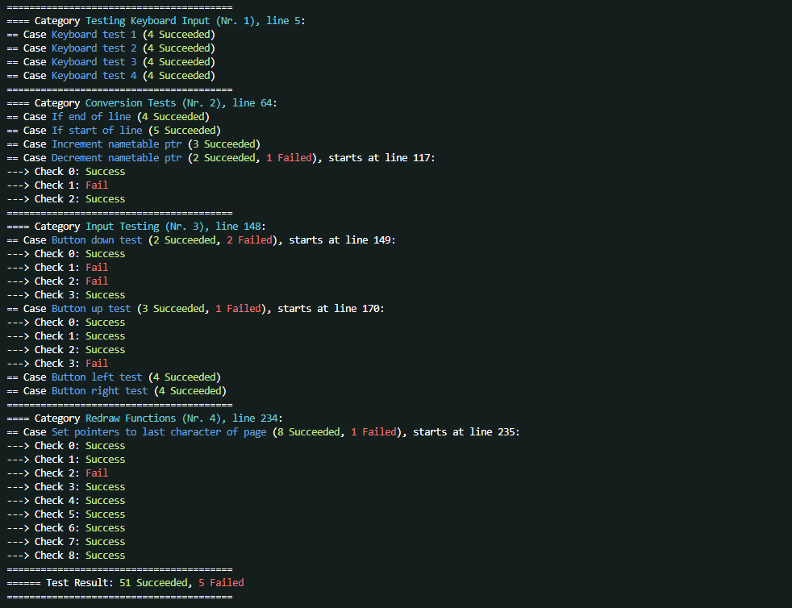
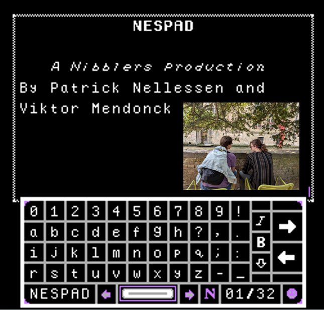

NESTest
NESTest is a unit testing framework for making games for the Nintendo Entertainment System (NES) in 6502 assembly.
It allows testing and verifying that the expected values in code stay expected.
When running tests, the framework will give your development environment output along these lines:

This project started due to a very acute lack of unit testing me and a colleague felt while developing NESPad, a fully-featured NES text editor.
Especially in a language as complex as 6502 assembly where it is incredibly easy to break old code with newly written code, I felt that not being able to unit test functions was a huge detriment. It had cost us as least 20 combined hours of debugging up to that point in the project.

This warranted spending some of the development time on a unit testing framework.
NESTest taught me a lot of things about designing easy-to-use processes and syntax, inter-operation between multiple programs using sockets, and making tools as extensible as possible. For example:
- running and viewing test results is a one-click operation in the IDE due to a prepared tasks.json file
- tests are automatically ran when making a git commit due to a git hook, preventing the commit if tests fail
- the unit testing runs in an emulator, but I abstracted the logic away so it can work with any emulator
All of this is to make the tool as flexible as possible while being as close to plug-and-play as it can be.